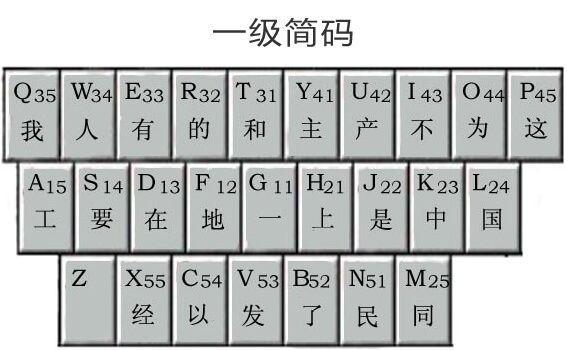

五笔字根表
可以先把25个字母背下来，再背对应的字根，按照从左往右，从上往下的顺序记忆25个字母：QWERT、YUIOP、ASDFG、HJKLM、XCVBN，其中字母Z没有分配字根，因此不用管字母Z
86版五笔口诀
五笔字根在键盘上分五个区，对应"横、竖、撇、捺、折"这五个区，以下五个区中字母对应按键，数字对应每个区的第一个按键到第五个按键，例如11表示第一个区的第一个按键，33表示第三个区第三个按键，42代表第四个区第二个按键
横区(一)
G 11 王旁青头戋(兼)五一
F 12 土士二干十寸雨
D 13 大犬三(羊)古石厂
S 14 木丁西
A 15 工戈草头右框七
竖区(丨)
H 21 目具上止卜虎皮
J 22 日早两竖与虫依
K 23 口与川，字根稀
L 24 田甲方框四车力
M 25 山由贝，下框几
撇(丿)
T 31 禾竹一撇双人立，反文条头共三一
R 32 白手看头三二斤
E 33 月彡(衫)乃用家衣底
W 34 人和八，三四里
Q 35 金勺缺点无尾鱼，犬旁留儿一点夕，氏无七(妻)
捺(丶)
Y 41 言文方广在四一，高头一捺谁人去
U 42 立辛两点六门疒
I 43 水旁兴头小倒立
O 44 火业头，四点米
P 45 之字军盖道建底，摘礻(示)衤(衣)
折区(乙)
N 51 已半巳满不出己，左框折尸心和羽
B 52 子耳了也框向上
V 53 女刀九臼山朝西
C 54 又巴马，丢矢矣
X 55 慈母无心弓和匕，幼无力
86版五笔字型字根表及助记词

五笔一级简码表
打出来一个汉字最多要敲四次按键，而一级简码只需要敲一次按键
在五笔输入法打字中，汉字输入时，出现率最高的文字，被有效的分配了“一级简码”，它充分的利用了26个“字母键（Z键除外）”，使用这项特有的功能可以有效的提高打字速度。
关于一级简码，这里特别推荐一个网站：https://www.iwubi.net/article/2

五笔拆字原理
关于五笔拆字原理，这里推荐一个网站，感觉这个网站讲的挺好的：https://www.iwubi.net/article/5